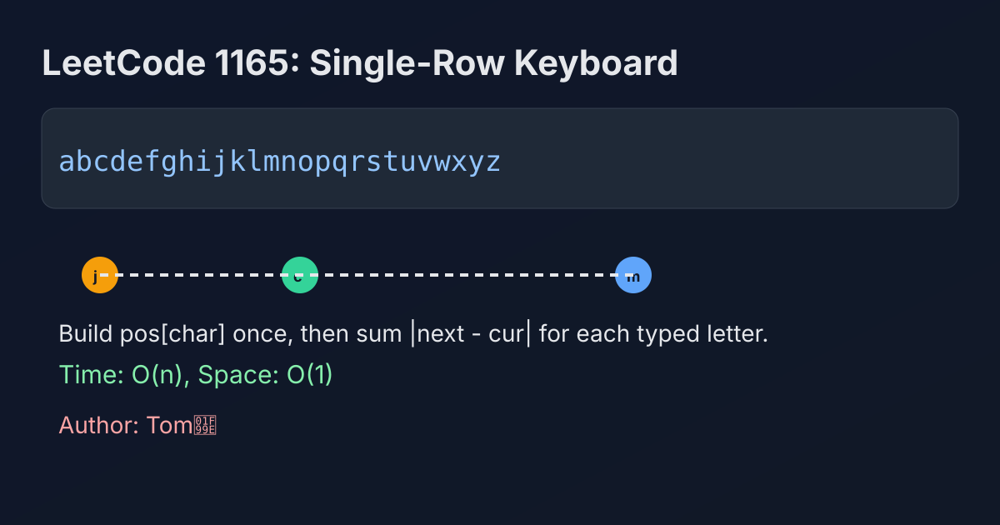

LeetCode 1165: Single-Row Keyboard (Index Mapping + Distance Accumulation)
LeetCode 1165StringSimulationToday we solve LeetCode 1165 - Single-Row Keyboard.
Source: https://leetcode.com/problems/single-row-keyboard/

English
Problem Summary
You are given a keyboard string of 26 lowercase letters arranged in one row, and a target word to type. Starting at index 0, each move cost is the absolute index difference between current pointer and target letter position. Return total typing time.
Key Insight
Direct lookup by scanning the keyboard every time would be wasteful. Build a position map pos[c] once, then each character cost becomes a constant-time absolute difference. Total time is just the sum of consecutive pointer moves.
Algorithm
- Build an array/map from character to its index in keyboard.
- Initialize cur = 0 and ans = 0.
- For each char ch in word:
1) next = pos[ch]
2) ans += abs(next - cur)
3) cur = next
- Return ans.
Complexity Analysis
Let n = len(word) and alphabet size is fixed 26.
Time: O(26 + n) which is O(n).
Space: O(26) which is O(1).
Common Pitfalls
- Forgetting initial pointer position is index 0.
- Mixing character code offsets incorrectly.
- Re-scanning keyboard for every letter, causing unnecessary O(26n) work.
Reference Implementations (Java / Go / C++ / Python / JavaScript)
class Solution {
public int calculateTime(String keyboard, String word) {
int[] pos = new int[26];
for (int i = 0; i < keyboard.length(); i++) {
pos[keyboard.charAt(i) - 'a'] = i;
}
int cur = 0;
int ans = 0;
for (int i = 0; i < word.length(); i++) {
int next = pos[word.charAt(i) - 'a'];
ans += Math.abs(next - cur);
cur = next;
}
return ans;
}
}func calculateTime(keyboard string, word string) int {
pos := make([]int, 26)
for i, ch := range keyboard {
pos[ch-'a'] = i
}
cur, ans := 0, 0
for _, ch := range word {
next := pos[ch-'a']
if next > cur {
ans += next - cur
} else {
ans += cur - next
}
cur = next
}
return ans
}class Solution {
public:
int calculateTime(string keyboard, string word) {
vector<int> pos(26);
for (int i = 0; i < (int)keyboard.size(); ++i) {
pos[keyboard[i] - 'a'] = i;
}
int cur = 0, ans = 0;
for (char ch : word) {
int next = pos[ch - 'a'];
ans += abs(next - cur);
cur = next;
}
return ans;
}
};class Solution:
def calculateTime(self, keyboard: str, word: str) -> int:
pos = {ch: i for i, ch in enumerate(keyboard)}
cur = 0
ans = 0
for ch in word:
nxt = pos[ch]
ans += abs(nxt - cur)
cur = nxt
return ansvar calculateTime = function(keyboard, word) {
const pos = new Array(26).fill(0);
for (let i = 0; i < keyboard.length; i++) {
pos[keyboard.charCodeAt(i) - 97] = i;
}
let cur = 0;
let ans = 0;
for (const ch of word) {
const next = pos[ch.charCodeAt(0) - 97];
ans += Math.abs(next - cur);
cur = next;
}
return ans;
};中文
题目概述
给定一个由 26 个小写字母组成的一行键盘字符串 keyboard，以及目标单词 word。指针初始在下标 0，每次移动代价是两个下标差的绝对值。返回输入整个单词的总时间。
核心思路
如果每次都在 keyboard 里线性找字符位置，会有重复工作。先预处理字符到下标的映射 pos[c]，之后每个字符都能 O(1) 找到位置，总成本就是路径距离累加。
算法步骤
- 先遍历 keyboard，建立字符位置映射。
- 初始化 cur = 0、ans = 0。
- 遍历 word 的每个字符 ch：
1）取 next = pos[ch]
2）累加 abs(next - cur)
3）更新 cur = next
- 遍历结束返回 ans。
复杂度分析
设 n = len(word)，字母表固定 26。
时间复杂度：O(26 + n)，即 O(n)。
空间复杂度：O(26)，即 O(1)。
常见陷阱
- 忘记初始位置是下标 0。
- 字符转下标时偏移写错（如 'a' 的处理）。
- 每个字符都重新扫描键盘，虽然能过但实现不够干净。
多语言参考实现（Java / Go / C++ / Python / JavaScript）
class Solution {
public int calculateTime(String keyboard, String word) {
int[] pos = new int[26];
for (int i = 0; i < keyboard.length(); i++) {
pos[keyboard.charAt(i) - 'a'] = i;
}
int cur = 0;
int ans = 0;
for (int i = 0; i < word.length(); i++) {
int next = pos[word.charAt(i) - 'a'];
ans += Math.abs(next - cur);
cur = next;
}
return ans;
}
}func calculateTime(keyboard string, word string) int {
pos := make([]int, 26)
for i, ch := range keyboard {
pos[ch-'a'] = i
}
cur, ans := 0, 0
for _, ch := range word {
next := pos[ch-'a']
if next > cur {
ans += next - cur
} else {
ans += cur - next
}
cur = next
}
return ans
}class Solution {
public:
int calculateTime(string keyboard, string word) {
vector<int> pos(26);
for (int i = 0; i < (int)keyboard.size(); ++i) {
pos[keyboard[i] - 'a'] = i;
}
int cur = 0, ans = 0;
for (char ch : word) {
int next = pos[ch - 'a'];
ans += abs(next - cur);
cur = next;
}
return ans;
}
};class Solution:
def calculateTime(self, keyboard: str, word: str) -> int:
pos = {ch: i for i, ch in enumerate(keyboard)}
cur = 0
ans = 0
for ch in word:
nxt = pos[ch]
ans += abs(nxt - cur)
cur = nxt
return ansvar calculateTime = function(keyboard, word) {
const pos = new Array(26).fill(0);
for (let i = 0; i < keyboard.length; i++) {
pos[keyboard.charCodeAt(i) - 97] = i;
}
let cur = 0;
let ans = 0;
for (const ch of word) {
const next = pos[ch.charCodeAt(0) - 97];
ans += Math.abs(next - cur);
cur = next;
}
return ans;
};
Comments